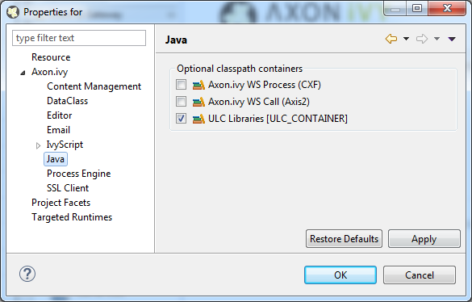

Migration Notes for Axon.ivy Designer 7.0 (Jakobshorn)
This document informs you in detail about incompatibilities that were introduced between Axon.ivy 6.0 (Säntis) and Axon.ivy 7.0 (Jakobshorn) and tells you what needs to be done to get your existing 6.0 projects working with Axon.ivy 7.0.
Table of Content:
- Html Dialog
- Business Case impact on CaseQuery, IWorkflowSession and IWorkflowContext API
- JPA Date persistence
- Qualified Workflow Links
- Display name of roles and users
- Portal
- Session attributes cleaned after user logs out
- Project compilation classpath
- Axon.ivy CI Plugin
- Removal of deprecated Public API
- tools.jar and package com.sun.tools removed
- Axon.ivy Extensions
- Deprecated Public API
- REST path parameter
- Business Data
Html Dialog
PrimeFaces (Html Dialog)
PrimeFaces and its supporting libraries have been updated:
- primefaces: 5.3 -> 6.1
- primefaces-extensions: 4.0 -> 6.1.0
- myfaces: 2.2.7 -> 2.2.12
There were minor changes that might force you to adjust existing Html Dialogs in order to run them in the latest version.
Moved components
Most users are affected by the movement of some components from the PrimeFaces-Extensions to PrimeFaces. To detect them fast we suggest to execute a search and replace query over your designer workspace. Replace the prefix from <pe:xyz> to <p:xyz>.
The following components were migrated from PrimeFaces Extensions to PrimeFaces:
InputNumberTimelineKnobKeyFilterImportConstantsImportEnum
Strict execution
There are reports that the new Primefaces version 6.1 is more strict than 5.3. This means that in 5.3 a UI component worked correct even if an attribute value was configured wrong (e.g. rendered="hello" instead of rendered="true").
In 6.1 this could now lead to an error or misbehave of the UI component. As soon as you fix the wrong configuration the UI component will work as expected again.
Components as Label target
If you use p:outputLabel, which targets a composite component, the composite component must use cc:editableValueHolder to identify the target input component. NOTE: a label must actually target a input component!
If you don't use cc:editableValueHolder, a NullPointerException will occur.
Example:
Usage of the component. The output label references the component in the for attribute:
<p:outputLabel value="Name" for="firstName"/>
<ic:MyTextField id="firstName" textValue="#{data.text}"/>Old component:
<cc:interface>
<cc:attribute name="textValue"/>
</cc:interface>
<cc:implementation>
<p:inputText id="input" value="#{cc.attrs.textValue}"/>
</cc:implementation>This will no longer work and throws a NullPointerException.
To fix this exception the component must now define a cc:editableValueHolder. The name attribute must reference a widget inside the component:
<cc:interface/>
<cc:attribute name="textValue"/>
<cc:editableValueHolder name="inputWidget"/>
</cc:interface/>
<cc:implementation/>
<p:inputText id="inputWidget" value="#{cc.attrs.textValue}"/>
</cc:implementation/>Workaround for Bug in SelectOneMenu
The SelectOneMenu is disabled when f:selectItem has an empty label.
This bug is currently not fixed by Primefaces. A quick workaround is to set the itemLabel.
<f:selectItem itemLabel="[Select One]" itemValue=""/>Full Migration Guide
The full migrations notes from PrimeFaces are as follows:
- If you use
p:outputLabel, which targets a composite component, the composite component must usecc:editableValueHolderto identify the target input component. NOTE: a label must actually target a input component! If you don't usecc:editableValueHolder, a NPE will occur. See https://github.com/primefaces/primefaces/issues/2163. - Search Expression Framework (SEF): SEF was aligned with JSF 2.3 and
@next,@previousand@childnow skips plain html markup. - If manually included, the primefaces.js include must be changed to include core.js and components.js
- The same also applies for the MenuRenderers of all PrimeFaces Layouts (before new layout versions will be released).
Please change
@ResourceDependency(library="primefaces", name="primefaces.js")
to
@ResourceDependency(library="primefaces", name="core.js"), @ResourceDependency(library="primefaces", name="components.js") - ImportConstants:
classNamehas been renamed totype - Search Expressions: SEF was refactored to skip unrendered components per default. If you would like to search for unrendered components in your application, please pass
SearchExpressionFacade#Options#VISIT_UNRENDEREDas option. - "last" facet for resources: before 6.0, it was possible to use the last facade inside any tag to add resources. We never implemented this feature so it was just a random feature as the facet always belongs to the direct parent. Please use the "last" facet only in h:head.
- Dynamic Resource Loading: We reimplemented this feature, so that it will even work for other libraries like PrimeFaces Extensions. If you dynamically add components via Java code, please make sure you create the component via the
#createComponentAPI:
ColorPicker colorPicker = (ColorPicker) FacesContext.getCurrentInstance().getApplication().createComponent(ColorPicker.COMPONENT_TYPE);
instead:
ColorPicker colorPicker = new ColorPicker(); - Per default, DataTable now skips processing child components for some events like paging. If you need child processing, you can set
skipChildren="false"onp:ajax. - GMap Rectangles: SouthWest and NorthEast was rendered the wrong direction. You probably need to switch the constructor parameters of LatLngBounds now.
- ContextMenu:
p:contextMenumust be placed AFTER the target component (e.g. datatable) in the xhtml now. - CommandButton:
onclickwill not be rendered ifdisableis set tofalse. This may cause unexpected behavior if the component is enabled on the client.
Bean Validation
The libraries that supply bean validation features have been
changed. In detail the java.validation library has been updated from version 1.0 to 1.1 and
myfaces.ext-val libraries have been replaced by hibernate-validator.
This slightly changes the validation behaviour:
-
Before 6.7 input text fields which had a binding to a property annotated with
@Sizeautomatically had theinputText:maxlengthproperty set according to its constraint annotation. Means if you had a constraint limiting the size of a string to 10 characters, then the user was never able to insert more than 10 characters without even triggering the validation. This feature is no longer supported. If you relied on it, you have to restrict themaxlengthof these inputs manually.
Error Handling
The error handling in html dialogs have been improved. To benefit from these changes, you can configure ajax exceptions handlers.
Urls
The urls of the html dialogs have been changed. This should ease the configuration of access rules.
Before 7.0:
http://localhost:8081/ivy/faces/instances/15E571C7871ED0B0/FormDemo.xhtml
Since 7.0:
http://localhost:8082/ivy/faces/instances/designer/HtmlDialogDemos$1/15E571AB033FE9EB/ch.ivyteam.htmldialog.demo.input.FormDemo/FormDemo.xhtml
PrimeExceptionHandlerELResolver
If you defined org.primefaces.application.exceptionhandler.PrimeExceptionHandlerELResolver or org.primefaces.application.exceptionhandler.PrimeExceptionHandlerFactory in faces-config.xml, remove it.
This el resolver and an ivy specific exception handler factory is now already configured per default.
See Help > Designer Guide > User Dialogs > Html Dialogs > Error Handling for more information.
Business Case impact on CaseQuery, IWorkflowSession and IWorkflowContext API
With the introduction of Business Cases the CaseQuery API and the methods that return cases on the IWorkflowSession and IWorkflowContext API will now return Business and Technical (Sub) Cases. Note, that end users are normally only interested in Business and not in Technical (Sub) Cases. To do so, use the new business case filter API methods.
CaseQuery Example:
import ch.ivyteam.ivy.workflow.query.CaseQuery;
import ch.ivyteam.ivy.workflow.ICase;
List<ICase> allCases = CaseQuery.create().executor().results();
List<ICase> businessCasesOnly = CaseQuery.create().where().isBusinessCase().executor().results();
List<ICase> subCasesOnly = CaseQuery.create().where().not(CaseQuery.create().where().isBusinessCase()).executor().results();IWorkflowSession Example:
import ch.ivyteam.ivy.workflow.IPropertyFilter;
import ch.ivyteam.logicalexpression.RelationalOperator;
import ch.ivyteam.ivy.workflow.CaseProperty;
import ch.ivyteam.ivy.workflow.ICase;
IPropertyFilter businessCaseFilter = ivy.wf.createCasePropertyFilter(CaseProperty.BUSINESS_CASE_ID, RelationalOperator.IS, null);
IPropertyFilter subCaseFilter = ivy.wf.createCasePropertyFilter(CaseProperty.BUSINESS_CASE_ID, RelationalOperator.IS_NOT, null);
List<ICase> myStartedCases = ivy.session.findStartedCases(null, null, 0, -1, true).getResultList();
List<ICase> myStartedBusinessCases = ivy.session.findStartedCases(businessCaseFilter, null, 0, -1, true).getResultList();
List<ICase> myStartedSubCases = ivy.session.findStartedCases(subCaseFilter, null, 0, -1, true).getResultList();JPA Date persistence
Ivy Date type fields, which we're auto initialized by ivyScript, are now persisted as null values in the database. Affected are fields of type ch.ivyteam.ivy.scripting.objects.Date, ch.ivyteam.ivy.scripting.objects.DateTime and ch.ivyteam.ivy.scripting.objects.Time.
If your code relies on the old behavior, where auto initialized values we're written into the database, you can switch back to this implementation by setting the System Property Persistence.JPA.defaultInitializedAsNull to OFF.
Qualified Workflow Links
The ivy.html context provides several methods to generate links to well known workflow sites. Namely the methods ivy.html.applicationHomeRef(), ivy.html.processStartListRef(), ivy.html.taskListRef().
These links are now qualified with a scheme host and port (e.g. http://myivyhost:8080/ivy/wf/myapp/applicationHome). Before 6.3 these links we're absolute root paths (e.g. /ivy/wf/myapp/applicationHome).
Links which are directly used on a WebPage activity, should still behave as before. If you manually did any string concatenation to add the scheme and host to this URI, your script may need an adjustment.
Portal
The Portal application that is bundled with the Engine has been improved in many areas. If you have customized the Portal or use a Portal html dialog layout please refer to the chapter Migration Notes in the PortalKit Documentation.
Session attributes cleaned after user logs out
Session attributes are cleaned after the logout of a user. Projects should not depend on values stored in a session after a logout.
Display name of roles and users
The method ISecurityMember::getDisplayName() which is implemented by Role and User returns now always a name.
RoleIf the display name is set, it will return the display name otherwise the role name. Before, it strictly returned the display name, also if it was empty.UserIf the full name is set, it will return the full name otherwise the user name. Before, it returned the full name and the username in brackets. If the full name was not available it returned only the username.
Additionally, the display name of the default role Everybody has changed from Top level role to Everybody.
Project compilation classpath
Before 6.5 ivy projects had access to many internal ivy libraries which are normally not required by the project. We now removed them by default from Axon.ivy libraries classpath container.
If you migrate your project from 6.0 or older you may have used CXF or AXIS2 libraries in your code and therefore compilation errors arise for these java files. You can get rid of these compilation problems in two ways:
- If you used a string utility or similar from these JARs by accident. Its recommended to adjust your code so that it works without internal libraries. Normally you can simpliy switch to another jar import like
org.apache.commons.lang3.StringUtils. - If you are patching an AXIS2 stub manually you really require these libraries on the classpath. You can enable them on the java project preferences of your project. To do so right click on your IvyProject and navigate to
Preferences > Axon.ivy > Java. Here you can enable optional classpath containers that provide these libraries..

Axon.ivy CI Plugin
If you use the com.axonivy.ivy.ci:project-build-plugin for continuous integration it is recommended to develop and build your ivy projects with the same Axon.ivy version. To do so ensure that the plugin you are using has the same major and minor version as the Axon.ivy Designer you are using for development. The version of the plugin can be specified in the pom.xml of your ivy Projects.
<plugins>
<plugin>
<groupId>com.axonivy.ivy.ci</groupId>
<artifactId>project-build-plugin</artifactId>
<version>7.0.0</version>
</plugin>
...
</plugins>Removal of deprecated Public API
The following Public API has been removed:
ivyteam.cs.webapp.pi.ConfigurationEditor
It was marked as deprecated for several years.
The API was used for programmable process elements (Program Start Event, Program Intermediate Event, Program Interface Activity).
Bean implementations using this class must be rewritten to use the new editor class ch.ivyteam.ivy.process.extension.impl.AbstractProcessExtensionConfigurationEditor.
tools.jar and package com.sun.tools removed
tools.jar has been removed. Axon.ivy doesn't provide classes of package com.sun.tools anymore.
This jar is part of the JDK. You didn't usually use it anyway.
But if you do, the designer will draw your attention to it.
In this case you can eliminate these dependencies or, if that's not possible, add the tools.jar to your project as a library.
Axon.ivy Extensions (*.extensions file deprecated)
Like Axon.ivy Designer the Engine now also supports the Eclipse extension point mechanism. Therefore, extensions can be registered in the plugin.xml that is located in your Axon.ivy extension bundle (*.jar file). It is no longer necessary to write a *.extensions file and put it into the configuration/extensions directory.
Old Axon.ivy extensions with a *.extensions file still work but are deprecated. We suggest to refactor Axon.ivy extensions to use the plugin.xml file instead. Support for *.extensions file will be removed in future versions.
Deprecated Public API
There are new API's to categorize Tasks and Cases (getCategory(), setCategoryPath(...), ch.ivyteam.ivy.workflow.category.CategoryTree).
The following old API's to categorize Tasks and Cases are now deprecated.
They should no longer be used and will be removed in future versions:
ch.ivyteam.ivy.workflow.ITask
getKindCode()getKindName()setKind(String, String)
ch.ivyteam.ivy.workflow.ICase
getProcessCategoryCode()getProcessCategoryName()setProcessCategory(String, String)getProcessCode()getProcessName()setProcess(String, String)getTypeCode()getTypeName()setType(String, String)getSubTypeCode()getSubTypeName()setSubType(String, String)
ch.ivyteam.ivy.workflow.query.TaskQuery
IFilterableColumns#kindCode()IFilterableColumns#kindName()IGroupByQueryColumns#kindCode()IGroupByQueryColumns#kindName()IOrderByQueryColumns#kindCode()IOrderByQueryColumns#kindName()IAggregationQuery#maxKindCode()IAggregationQuery#minKindCode()IAggregationQuery#maxKindName()IAggregationQuery#maxKindName()
ch.ivyteam.ivy.workflow.query.CaseQuery
IFilterableColumns#processCategoryCode()IFilterableColumns#processCategoryName()IFilterableColumns#processCode()IFilterableColumns#processName()IFilterableColumns#typeCode()IFilterableColumns#typeName()IFilterableColumns#subTypeCode()IFilterableColumns#subTypeName()IGroupByQueryColumns#processCategoryCode()IGroupByQueryColumns#processCategoryName()IGroupByQueryColumns#processCode()IGroupByQueryColumns#processName()IGroupByQueryColumns#typeCode()IGroupByQueryColumns#typeName()IGroupByQueryColumns#subTypeCode()IGroupByQueryColumns#subTypeName()IOrderByQueryColumns#processCategoryCode()IOrderByQueryColumns#processCategoryName()IOrderByQueryColumns#processCode()IOrderByQueryColumns#processName()IOrderByQueryColumns#typeCode()IOrderByQueryColumns#typeName()IOrderByQueryColumns#subTypeCode()IOrderByQueryColumns#subTypeName()IAggregationQuery#maxProcessCategoryCode()IAggregationQuery#minProcessCategoryCode()IAggregationQuery#maxProcessCategoryName()IAggregationQuery#minProcessCategoryName()IAggregationQuery#maxProcessCode()IAggregationQuery#minProcessCode()IAggregationQuery#maxProcessName()IAggregationQuery#minProcessName()IAggregationQuery#maxTypeCode()IAggregationQuery#minTypeCode()IAggregationQuery#maxTypeName()IAggregationQuery#minTypeName()IAggregationQuery#maxSubTypeCode()IAggregationQuery#minSubTypeCode()IAggregationQuery#maxSubTypeName()IAggregationQuery#minSubTypeName()
ch.ivyteam.ivy.workflow.TaskProperty
KIND_CODEPROCESS_CATEGORY_CODEPROCESS_CATEGORY_NAMEPROCESS_CODEPROCESS_NAMETYPE_CODETYPE_NAMESUB_TYPE_CODESUB_TYPE_NAME
ch.ivyteam.ivy.workflow.CaseProperty
PROCESS_CATEGORY_CODEPROCESS_CATEGORY_NAMEPROCESS_CODEPROCESS_NAMETYPE_CODETYPE_NAMESUB_TYPE_CODESUB_TYPE_NAME
ch.ivyteam.ivy.workflow.IWorkflowSession
findWorkTaskCategories(...)findWorkedOnTaskCategories(...)findStartedCaseCategories(...)findInvolvedCasesCategories(...)findInvolvedCasesByRoleCategories(...)
ch.ivyteam.ivy.workflow.IWorkflowContext
findTaskCategories(...)findCaseCategories(...)
REST path parameter
Prior to 7.0.0 all REST resources had to be annotated with the prefix {applicationName}. Otherwise an authentication on this path was not possible.
Now this application name is added to the resource URI without the need for the project developer to explicitly declare it.
Classes that contain the old parameter should remove it as it causes the problem, that such resources can only be deployed to a single application.
| 6.2 resource | 7.0.0 resource | |
|---|---|---|
| |
Business Data format migration required
Migration only needed for 6.3..7.0
The stored JSON format of the Business Data values has been changed. Therefore, productive Business Data values, written with a previous version on an Engine, are no longer accessible with the BusinessDataRepository until they are explicitly migrated.
To migrate your stored Business Data to the latest version you must add a new process in your ivy project that owns the root Business Data class. This process should call ch.ivyteam.ivy.business.data.store.migration.BusinessDataJsonFormatMigrator.migrate(com.workflow.MyBusinessData.class, false) in a script activity. Re-deploy the project and start an instance of this process to apply the migration. Ensure that you call the migration method for each root Business Data classes of your application.
See WorkflowDemos > Processes > BusinessData > MigrateData for an example